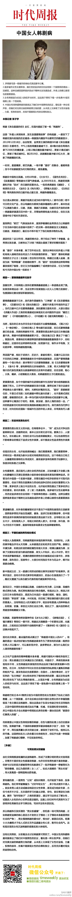

//@时代周报: 对外表的雕琢暂时还不是当下中国男性接受的主流教育，固然很多男性开始自觉减肥、健身、追求打扮甚至整容等，但中国男性追求外表美的积极性和经验度还是远逊于女性，这导致社会上美女不少，但有钱男人少，有钱又帅的男人更少。在中国，帅与富、帅与才往往不可兼得，直接导致很多高要求女@时代周报:【中国女人韩剧病】《来自星星的你》走红，在国内掀起了新一轮“韩剧热”。一时间，星星燎原，欧巴风靡。一场不聊“星你”的聚会，最难将息；至今不知都教授为何尤物的男女，难免羞愧。韩剧为何突然变的如此之火？本报妇女之友@子宇童鞋 撰文分析韩剧火热成因，点出4大病因网页链接 